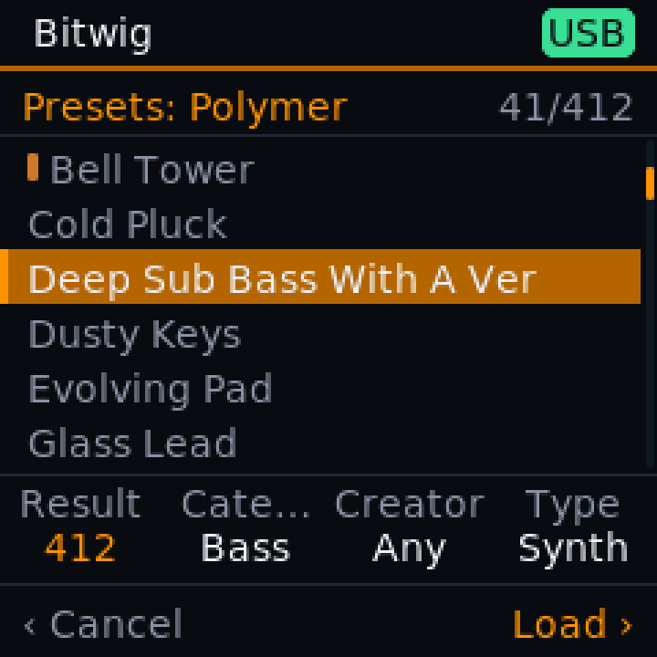

DAW manual · Live · Views
14 Browser
Find a preset or a device by ear without leaving the keyboard. Holding SEQ lists the presets of the selected device; with Oct- it opens Live's whole browser. Live hot-swaps presets, so you hear each one in place.
Download the Live PDF PDF, 0.5 MB
Getting there
| Gesture | Opens |
|---|---|
| hold SEQ | The presets of the selected device. Live hot-swaps: what you load replaces the device's current sound |
| Oct- + hold SEQ | Live's whole browser: Sounds, Drums, Instruments, Audio Effects, MIDI Effects and the rest. What you load goes after the selected device |
When a device has no presets, the screen says No presets for <device>: browsing all and opens the whole browser.
What the screen shows

The title (the device or Browser), the cursor's position, eight rows with the cursor's row filled, and < Cancel / OK > over Left / Right.
The controls
| Control | In the Browser |
|---|---|
| K1 | Move the cursor one row |
| K2 | Move the cursor eight rows |
| Right | Open the folder, or load the item |
| Left | Back one folder; at the top, close |
| SEQ (tap) | Close |
After loading or closing, the keyboard returns to the view you came from.
Finding a sound
- Select the instrument whose sound you want to change. Hold SEQ.
- Turn K1 and play: Live swaps in each preset you load with Right.
- To add an effect after it instead, hold Oct- and SEQ, open Audio Effects with Right, pick one, Right again.
Good to know
- Live gives scripts no preview, so you hear a preset by loading it; hot-swap makes that quick.
- Long folders are cut at 512 rows.